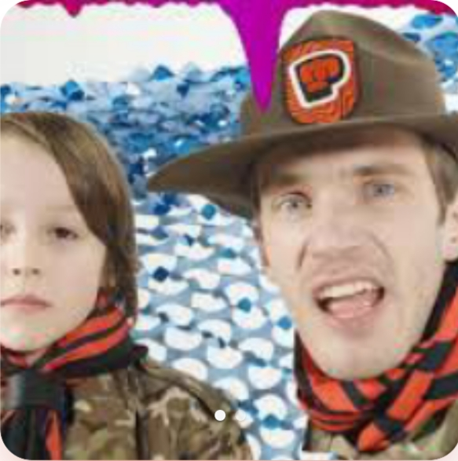
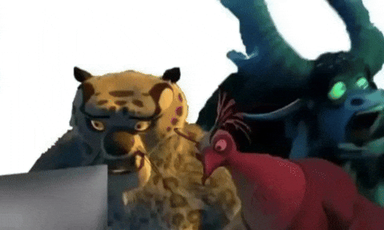

I. Ini adalah bagian utama dari dokumen...
Felix Arvid Ulf Kjellberg[a] (born 24 October 1989), known online as PewDiePie,[b] is a Swedish YouTuber. He is known for his gaming videos, satirical commentary, comedy-sketches and lifestyle vlogging. Kjellberg's popularity on YouTube and extensive media coverage have made him one of the most noted online personalities and content creators. Media coverage of him has called him a figurehead for YouTube, especially in the gaming genre. Kjellberg registered his YouTube channel "PewDiePie" in 2010, primarily posting Let's Play videos of horror and action video games. His channel gained a substantial following and was one of the fastest growing channels in 2012 and 2013, before becoming the most-subscribed on YouTube on 15 August 2013. From 29 December 2014 to 14 February 2017, Kjellberg's channel was also the most-viewed on the platform. After becoming the platform's most-popular creator, he diversified his content, shifting its focus from Let's Plays and began to frequently include vlogs, comedy shorts, formatted shows, and music videos. For its first foray into original programming as part of the relaunch of its subscription service, YouTube also enlisted Kjellberg to star in a reality web series titled Scare PewDiePie.

II. P balap
Paragraf... | Ini nyoba buat list, Unordered List:
- Pilihan
- Pilihan
- Pilihan

Ini nyoba buat list, Ordered List:
- Pilihan urut
- Pilihan urut
- Pilihan urut
III. Ini nyoba buat tabel
Ini nyoba buat tabel, tabel ini berisi data no, skill, dan hobi:
| No | Skill | Hobi |
|---|---|---|
| 1 | Python | Ngoding |
| 2 | HTML | Nonton |
| 3 | CSS | Main Game |